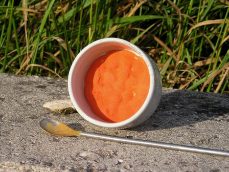
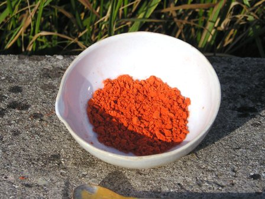

Continuazione dalla puntata precedente.
La volta scorsa avevamo preparato e osservato il pentaminoclorocobalto dicloruro, con la determinazione di sacrificarlo prima o poi per farlo rinascere come alchimistica Fenice sotto le nuove spoglie di pentaminonitrocobalto dicloruro.
E' venuto il momento e detto fatto! Anche oggi grazie al cielo c'è un po' di tempo libero: allora sursum corda, ancora mano alle beute, fuoco ai bunsen e via con gli esperimenti sui composti di coordinazione!
Oggi ci servirà:
- il [Co(NH3)5Cl]Cl2 dell'altra volta (sono stufo di scriverne il nome!)
- ammoniaca
- acido cloridrico
- sodio nitrito
- etanolo
- ghiaccio
La reazione di principio da ottenere è questa:
[Co(NH3)5Cl]Cl2 + NaNO2 --> [Co(NH3)5NO2]Cl2 + NaCl
in realtà non avviene così semplicemente, ma secondo la procedura seguente:
- in un becker da 100 ml mescolare 2,5 g di [Co(NH3)5Cl]Cl2 e 35 ml di ammoniaca al 10%; riscaldare fin quasi all'ebollizione mescolando, cercando di sciogliere quanto più sale possibile, ma rimarrà sempre un precipitato.
Filtrare velocemente ancora a caldo e far raffreddare la soluzione limpida, di colore rosso lampone scuro.
Neutralizzare fino a pH neutro con HCl al 10%, aggiungere 2,5 g di NaNO2, mescolare e poi raffreddare con ghiaccio a zero gradi.
A questo punto, sempre mescolando bene, aggiungere goccia a goccia 2,5 ml di HCl al 20% e lasciar riposare in ghiaccio almeno un'ora, mescolando ogni tanto e sostituendo il ghiaccio che si scioglie.
Aggiungendo l'HCl la soluzione si intorbida e si colora sempre più di arancio, mentre si va formando un precipitato del medesimo colore. Sempre con la soluzione fredda, filtrare su buchner e lavare un paio di volte con 5 ml di acqua ghiacciata e altrettante con etanolo freddo.

Si ottiene sul filtro l'amminonitroderivato del cobalto, di un bellissimo colore arancio caldo, che si fa seccare all'aria sotto forma di polvere sottilissima microcristallina.

E così ci siamo levati la soddisfazione di vedere anche questo abbastanza esotico sale di coordinazione, dicloruro di pentaminonitrocobalto, oltretutto con un colore assai insolito per i sali di cobalto, di solito tutti o rossi o azzurri: eccolo.
